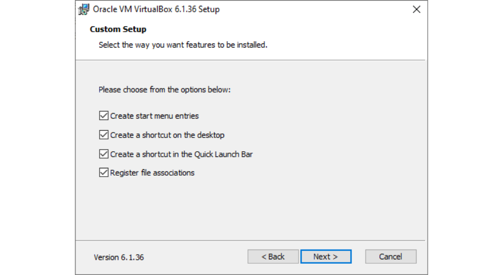
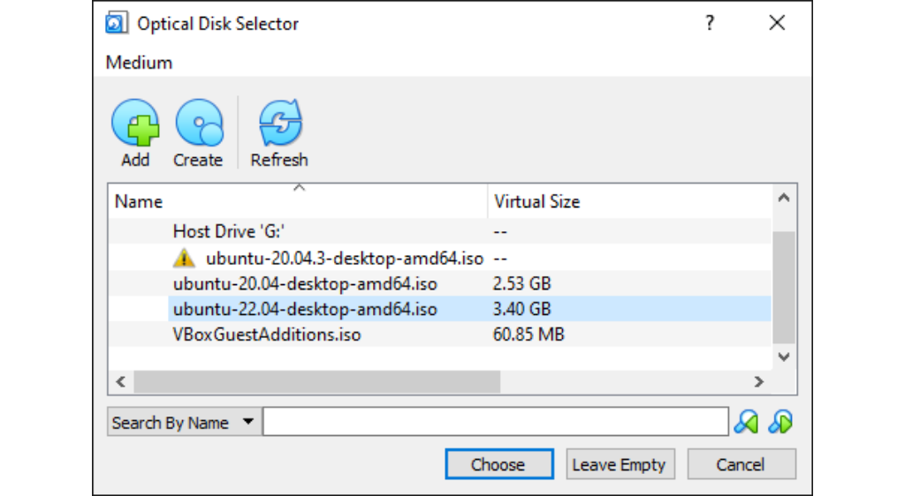
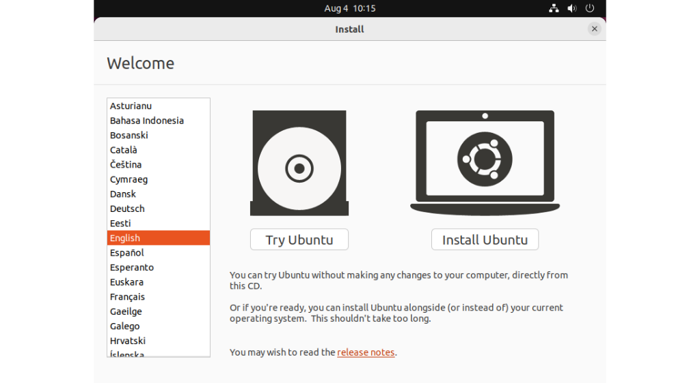
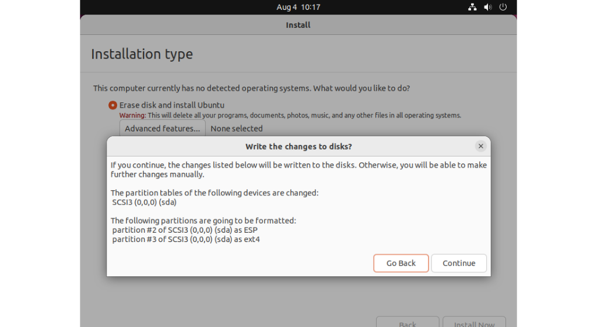

WINDOWS SUBSYSTEM FOR LINUX
LINKS
WINDOWS SUBSYSTEM FOR LINUX INSTALLATION
Open Command Prompt by typing cmd in the search bar and
select Run as administrator
Click Yes
Type in wsl --install and run
Wait until the command finishes running. And then it's done!
VIRTUAL MACHINE
LINKS
VIRTUAL MACHINE INSTALLATION
Visit Oracle VM VirtualBox Download and download the package
for your platform and run the executable file
Click Next
Click Next

Select your preferred settings, then click Next
Click Yes
Click Install

Wait until the installation is finished, then click Finish
VIRTUALBOX UBUNTU INSTALLATION
Visit Ubuntu Desktop Download and download latest version of
Ubuntu disc image file
When you see this page, wait until the download is finished. You should get a file
named ubuntu-22.04-desktop-amd64.iso for version 22.04
Open VirtualBox and click New
Name your Virtual Machine and choose your VM directory
Allocate memory for your VM. More memory means smoother performance
Allocate memory for your VM. More memory means smoother performance
Choose your hard disk file type. The default setting is recommended

Choose if you want your hard disk to be dynamically allocated or be fixed
Choose your disk space
Click on the folder icon next to the drop-down menu

Click Add
Navigate to your .iso file that you downloaded earlier. Select that file and click Open

Select the .iso file and click Choose
Click Start
Choose Try or Install Ubuntu and press Enter

Choose your preferred language and click Install Ubuntu
Choose your keyboard layout
Choose your installation type. Default settings are recommended
Choose whether you want to install Ubuntu as your main OS or with other OS

Confirm everything, then click Continue

Choose your Region
Name your machine and set a password, then click Continue

After this screen shows up, press Enter
Enjoy your Ubuntu!